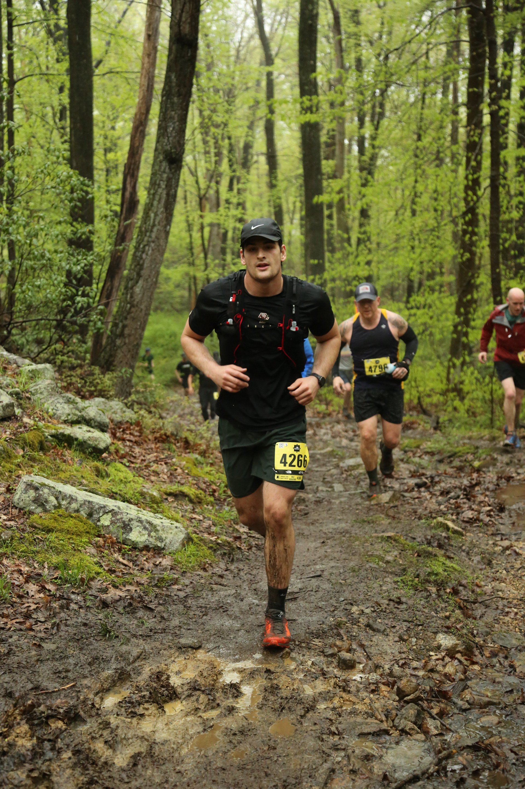
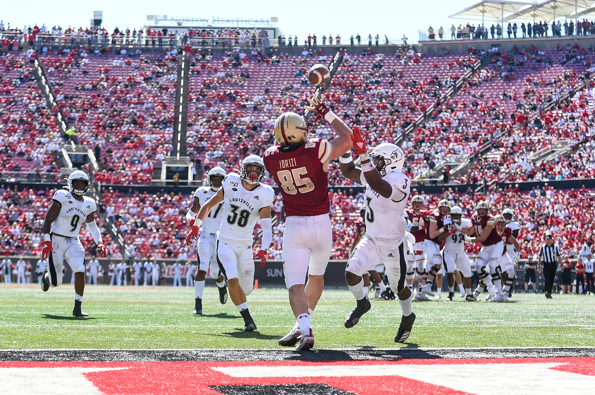

Services
Care for high performers who want more than coping.
Personal development, performance coaching, and speaking for people pursuing excellence without losing clarity, resilience, or meaning.

01 / Personal Development Coaching
For the person behind the performance.
Personal development coaching creates room to understand the patterns, pressure, relationships, and internal demands shaping your life. The work is reflective and structured, but it does not ask you to abandon ambition in order to build well-being.
Request a consultation- Stress, pressure, and self-command
- Identity, purpose, and transition
- Relationships and emotional patterns
- Balance between achievement and well-being

02 / Performance Coaching
Build the mindset and systems behind high performance.
Performance coaching is designed for athletes, professionals, entrepreneurs, and creatives who want sharper focus, stronger recovery, and a healthier relationship with the standard they hold themselves to.
Confidence / composure / recovery / accountability / fulfillment
03 / Public Speaking
Invite Korab to speak to the people you lead.
Korab is available for teams, campuses, organizations, and events looking for a grounded voice on mindset, performance, and the inner life of achievement.
Invite Korab to speakHonest conversations about pressure, identity, and emotional well-being.
How self-understanding shapes connection, intimacy, and trust.
Responsibility, communication, and growth inside family systems.
Sports and executive performance through resilience, focus, and recovery.
Discipline, standards, and sustainable achievement for students.
Start here
Not sure which service fits?
A consultation can help clarify whether development coaching, performance coaching, or speaking is the strongest next step.
Schedule a consultation